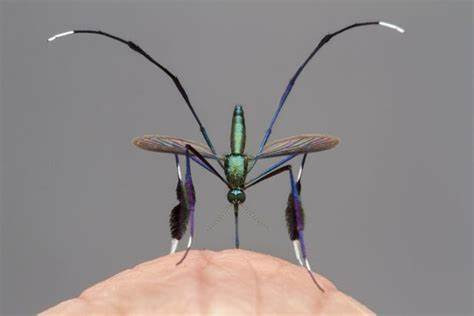

 El género Sabethes pertenece a la familia Culicidae y está conformado por varias especies que habitan principalmente en zonas selváticas de América Central y América del Sur. Estos mosquitos destacan por su aspecto exótico y llamativo, con escamas metálicas de colores brillantes y patas largas y plumosas, características que los distinguen de otros géneros. La evolución del género ha estado fuertemente influida por los ecosistemas tropicales, especialmente por su adaptación a criaderos naturales como huecos de árboles, bromelias y otras plantas que acumulan agua.
Los Sabethes se han mantenido en gran parte dentro de ambientes forestales, aunque algunos de ellos han demostrado cierta capacidad de adaptarse a la cercanía de asentamientos humanos ubicados en los bordes de la selva. Su origen evolutivo está vinculado a una estrecha relación con estos hábitats vegetales, lo que influye directamente en su ciclo de vida y comportamiento reproductivo.
Una de las especies más conocidas del género es Sabethes chloropterus, vector importante del virus de la fiebre amarilla selvática. Debido a su comportamiento preferentemente arborícola y su baja densidad poblacional en comparación con otros mosquitos, su impacto en salud pública es más localizado, pero no por ello menos relevante en contextos rurales y selváticos.
El ciclo de vida del mosquito Sabethes también comprende cuatro fases: huevo, larva, pupa y adulto. Las hembras depositan los huevos individualmente en cavidades con agua acumulada, especialmente en huecos de árboles y plantas epífitas. Esta estrategia reproductiva está muy asociada a su hábitat selvático y a la disponibilidad estacional de criaderos.
Las larvas son acuáticas y se alimentan de detritos orgánicos. Pasan por varios estadios de desarrollo hasta convertirse en pupas, que tampoco se alimentan pero son activas en el agua. Posteriormente, emerge el mosquito adulto que suele tener hábitos diurnos y crepusculares.
Los adultos se caracterizan por su vuelo ágil y comportamiento discreto. Las hembras necesitan sangre para el desarrollo de sus huevos, pero su picadura puede pasar inadvertida. En comparación con otros mosquitos, los Sabethes tienen una menor tendencia a formar poblaciones grandes, lo que limita parcialmente su capacidad de transmisión de enfermedades, aunque siguen siendo importantes en zonas selváticas.
Sabethes spp., junto con Haemagogus, son vectores principales del virus de la fiebre amarilla en su ciclo selvático. Esta enfermedad viral puede causar fiebre, ictericia,
El mosquito Sabethes no suele picar con frecuencia, pero sus picaduras pueden causar enrojecimiento leve y picazón. Es vector de fiebre amarilla en selvas tropicales.